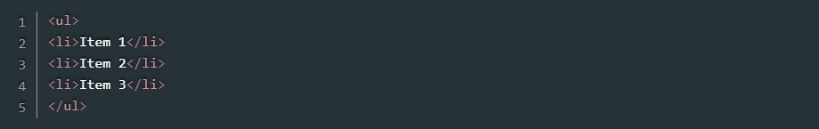
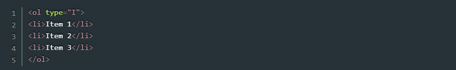
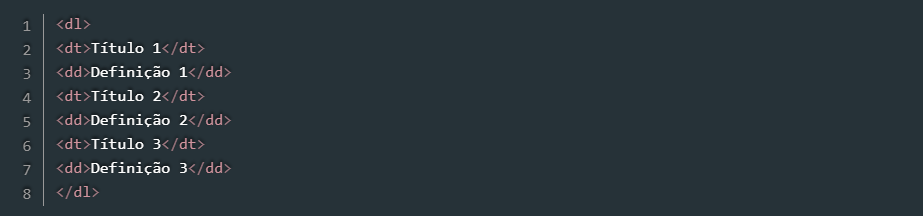
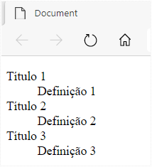

Listas são elementos úteis para organizar e ordenar itens que estão relacionados de alguma forma. No HTML é possível criar três tipos de listas: ordenadas (com a tag ol), não ordenadas (com a tag ul), e de definição (por meio da tag dl).
Na Listagem 9 temos um exemplo de lista ordenada, enquanto a Listagem 10 traz um exemplo de lista não ordenada. Em seguida, a Figura 6 mostra o resultado dos dois códigos. Observe que cada item das primeiras listas é definido pela tag li.
Resultado:
No caso das listas ordenadas temos o atributo type que permite especificar o tipo de marcador a ser usado: números (padrão), números romanos ou letras.
Os valores permitidos para esse atributo são: 1 - números (padrão) i - números romanos minúsculos I - números romanos maiúsculos a - letras minúsculas A - letras maiúsculas As listas de definição têm um comportamento um pouco diferente, uma vez que cada item é composto por um título (dt) e uma definição (dd), semelhante ao que ocorre em dicionários, nos quais temos os verbetes e suas definições. Na Listagem 11 temos um exemplo desse tipo de lista, com seu resultado ilustrado na Figura 7.
Resultado:
